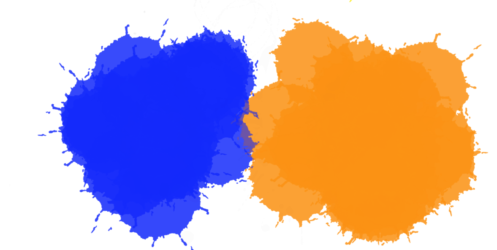

Grundlæggende begreber
Farver beskrives ud fra tre faglige begreber: kulør, intensitet og lyshed. (hue, saturation og value på engelsk)
Farvecirklen
Farvecirklen blev defineret af Johannes Itten i starten af 1900-tallet.
Kontraster
Kontraster opstår når der er et modsætningsforhold mellem to farver, noget der adskiller farverne fra hinanden, men derved også bevirker, at de fremhæver hinanden.

Interfacedesign, Morten Rold. Del 4 - Æstetik.